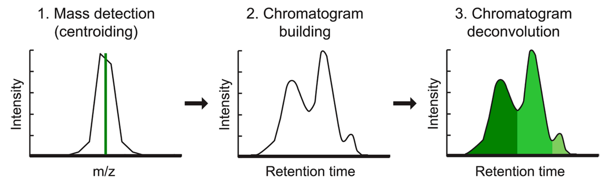

General terminology¶
MS¶
Precursor and fragment ions¶
The precuror ion (a.k.a. "parent ion") is the ion that dissociates to a smaller fragment ions in MS/MS experiment.
A fragment ion (a.k.a. "daughter ion" or "product ion") is the charged product of an ion dissociation. A fragment ion may be stable or may dissociate further to form other charged fragment ions and neutral species of successively lower mass.
Accurate mass, exact mass and mass accuracy¶
The accurate mass is the experimentally-determined mass of an ion measured with a high-resolution mass spectrometer.
The exact mass is the calculated mass of an ion based on its elemental formula, isotopic composition and charge state. While the accurate mass is an experimentally-measured quantity, the exact mass is a theoretically-calculated quantity.
The mass accuracy is defined as the difference between the measured value (accurate mass) and the true value (exact mass). It can be expressed either in absolute (mDa) or relative (ppm) units.
Monoisotopic mass¶
Exact mass of an ion calculated using the mass of the lightest isotope of each element.
Isotopic pattern¶
Isotopic (or isotope) pattern describes a set of peaks related to the ions with the same chemical formula but containing different isotopes; e.g. the 16 and 17 mass/charge peaks in a CH4 sample arising from 12CH4+ and 13CH4+ ions.
Mass resolution¶
Resolution describes an ability of MS method to distinguish two peaks of different mass-to-charge ratios. Can be interchangeably used with mass resolving power
Wikipedia article on MS resolution
Mass resolving power¶
In a mass spectrum, the observed mass divided by the difference between two masses that can be separated, m/Δm.
Data acquisition mode¶
Process of sampling to capture the signals. Different modes have been introduced to better capture signals after LC separation, especially in metabolomics. In MS data can be acquired using three main modes:
Read more: Comparison of data-dependent and data-independent modes
Full scan acquisition mode¶
In full-scan mode, the mass spectrometer runs on MS1-only mode, and measures m/z values and abundances of all the metabolic features.
Widely used as it allows to capture most of the relevant ions.
Further confirmation of statistically significant features is typically carried out by a separate LC-MS/MS run in a targeted manner.
Data-dependent acqusition mode (DDA)¶
Mode of the data collection in tandem mass spectrometry. In data-dependent acquisition (DDA) schemes, the mass spectrometer detects 'suitable' precursor ions in each MS scan and selects them for fragmentation in consecutive MS2 scans.
 DDA can redundantly identify high-abundance features, while neglecting low-abundance ones.
DDA can redundantly identify high-abundance features, while neglecting low-abundance ones.
TopN acquisition scheme
In TopN scheme, the set of N ions is selected for fragmentation by their intensity in the latest MS1 survey scan.
Data-independent acqusition mode (DIA)¶
DIA can be conducted either by fragmenting all ions that enter the instrument at a given time (called broadband DIA) or by sequentially focusing on a m/z window of precursors and fragmenting all precursors detected within that window.
Cycle time acquisition scheme
In cycle time acquistion, a set of precursor ions is selected using m/z values (usually 1.0 to 2.0 m/z range). A full MS/MS fragment ion spectrum is collected for each ion. Cycle time is determined by scan times of all scans in the set.
LC-MS¶
Total ion current chromatogram¶
The total ion current (TIC) chromatogram displays the summed signal intensity (y-axis) over the entire m/z range at any one retention time point (x-axis) in the LC-MS run. The following figure shows a TIC chromatogram of a 9-compounds mixture analysed on LC-MS system.

In complex samples, the TIC chromatogram often provides limited information as multiple analytes elute simultaneously, obscuring individual species.
Base peak chromatogram¶
The base peak chromatogram (BPC) displays the signal intensity of the most intense maass peak in the MS spectra at any one retention time point (x-axis) in the LC-MS run. The following figure shows the same data as above, visualized in BPI mode.

Extracted ion chromatogram¶
The extracted ion chromatogram (EIC) displays the signal intensity of a specific m/z value, within a defined tolerance (e.g. ± 5 ppm), at any one retention time point in the LC-MS run. The following figure shows the EIC of m/z 455.2945 ± 5 ppm (same sample as above).

Chromatographic resolving¶
Peak overlapping, or co-elution, is a common problem in any chromatographic separation technique. In the case of LC-MS (especially untargeted omics analysis), it is virtually impossible to obtain a full baseline separation for the hundreds (or thousands) of analytes eluted through the column. The split of partially-overlapping and shoulder peaks into indivual features is generally referred to as chromatographic resolving and is one of the most crucial steps of data processing. TO FINISH.
Missing values¶
MISSING VALUE DEFINITION (see https://www.nature.com/articles/s41598-017-19120-0).
Missing values_ can be caused by biological and/or technical reasons. A gap (match-to-nothing) is defined as a missing value in an alignment. Peaks that cannot be aligned (corresponding to a gap) are designated with a value of “NA” (missing value).
Missing value imputation¶
Missing valueS are generally undesired as they might introduce bias and significantly affect downstream data analysis, especially when statistics is involved. Therefore, it is important to REDUCE THEM.
To tackle this issue, a value for the peak needs to be imputed. The peak finder gap-filling module.
A simple gap-filling approach is to integrate the area where the peak is expected but not detected. These areas usually correspond to spectral noise. By doing so, no bias is introduced. Therefore, we recommend to always run the gap filling module before the missing value imputataion.
The other alternative for gap filling is the Same RT and m/z range gap filler, which limits the gap fill to features within the original detected peak window. This leads to much cleaner results.
However, this module causes MISSING VALUE IMPUTATION. For purposes of further data processing, noise should be always preferred to zero values.
MZmine 3 does not support missing-value imputation.
MZmine-specific terminology¶
Masses and Features¶
In MS data processing, the term mass is normally used to refer to an individual signal in a mass spectrum, which corresponds to an ion detected by the mass spectrometer (see Mass detection).
In LC-MS, a feature is defined as a bounded, two-dimensional (m/z and RT dimensions) signal characterized by a pair of m/z and RT values and associated with the detected signal intensity.
In LC-IM-MS, a feature is also characterized by the ion mobility value recorded for the ion (see LC-MS and LC-IMS-MS data comparison.
MZmine 3 provides a selection of different algorithms for LC-(IM)-MS feature detection, depending on the nature of the MS data (e.g. mass accuracy and resolution). All the algorithms follow the same logic:
- EICs are constructed starting from each m/z value in the mass lists
- Then, EICs are subsequently deconvoluted into individual features (see figure).
- Finally, additional information, such as isotope pattern, adduct type, etc. can be assigned to the individual features.

Mass list¶
In MZmine, we call mass list the output of the mass detection module.
A mass list is a list of m/z values and corresponding signal intensities, found in each mass spectrum (MS or MSn) of each processed raw data file.
Every mass spectrum contained in the raw file is processed individually. The signals exceeding the set noise threshold are included in the mass list. See Mass detection module.
Feature list¶
In MZmine, feature lists are the output of the feature detection process (see Masses and features).
The set of detected features in each LC-MS run is stored as a list, hence the name "feature list" (see, for example, ADAP chromatogram builder and Local mimimum resolver for more details). Multiple feature lists can undergo further processing (e.g. feature alingment) which results in a table (often referred to as feature table) where samples are arranged in columns, features in rows and each entry contains the signal intensity detected for the corresponding feature in the corresponding sample.
Intra and inter-scan tolerances¶
m/z tolerance is defined as maximum allowed difference between m/z values in order for them to be considered the same. Can be defined as intra-scan m/z tolerance for values with one scan (used, e.g., in Mass detection of isotope signals) or inter-scan m/z tolerance for values between different scans (in, e.g., ADAP Chromatogram Builder)
Chromatogram resolving¶
Was referred to as Deconvolution in MZmine 2. Process of splitting "imperfect" - overlapping and partially co-eluting - peaks, which are retained as single features, into the separate features.
References¶
- Pluskal, T., Castillo, S., Villar-Briones, A. & Oresic, M. MZmine 2: Modular framework for processing, visualizing, and analyzing mass spectrometry-based molecular profile data. BMC Bioinformatics (2010). DOI: 10.1186/1471-2105-11-395
- Pluskal, T. et al. Processing Metabolomics and Proteomics Data with Open Software: A Practical Guide, Chapter 7: Metabolomics Data Analysis Using MZmine (2020). DOI: 10.1039/9781788019880-00232
- Smoluch M., Piechura K. Mass Spectrometry: An Applied Approach, Chapter 3: Basic Definitions (2019). DOI: 10.1002/9781119377368.ch3
- IUPAC. Compendium of Chemical Terminology, 2nd ed. (the "Gold Book"). Compiled by A. D. McNaught and A. Wilkinson. Blackwell Scientific Publications, Oxford (1997). Online version (2019-) created by S. J. Chalk. ISBN 0-9678550-9-8. 10.1351/goldbook
- Guo, J., Huan T. Evaluation of significant features discovered from different data acquisition modes in mass spectrometry-based untargeted metabolomics. Analytica Chimica Acta (2020). DOI: 10.1016/j.aca.2020.08.065